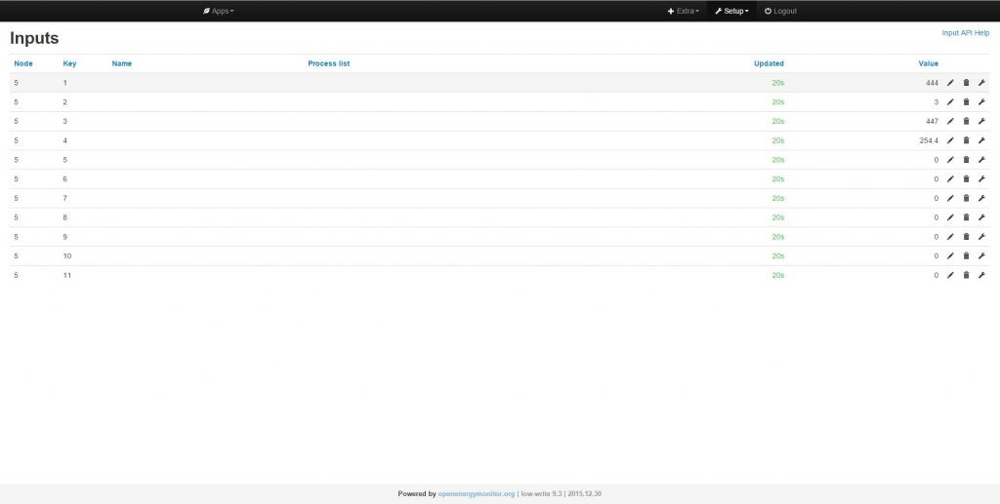
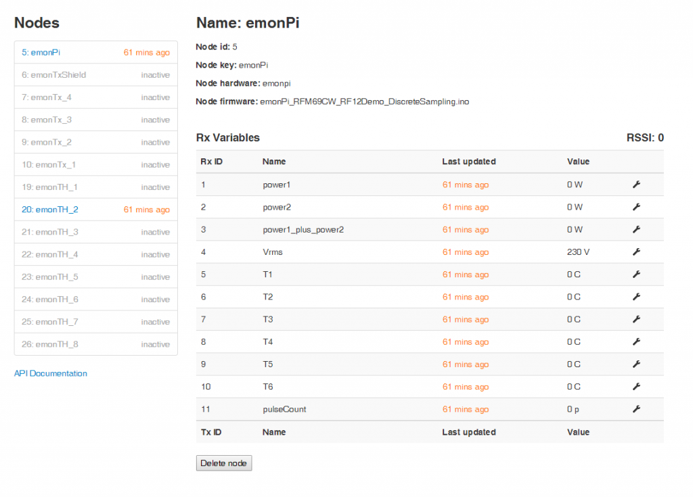
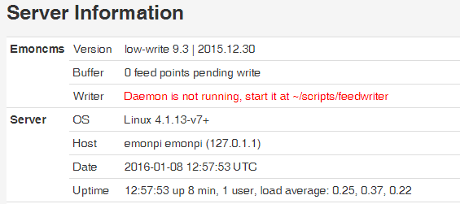
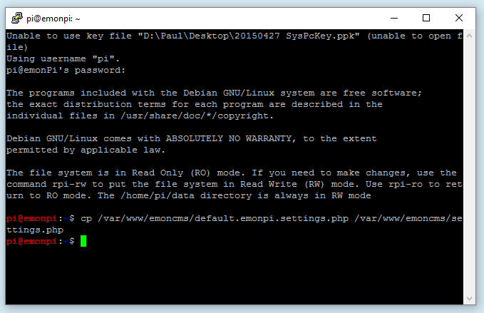

This error (see below) started sometime on January 2. This is a snippet from the emonpiupdate.log file.
Emoncms update started
Sat 2 Jan 18:43:16 CST 2016
git pull /var/www/emoncms
error: insufficient permission for adding an object to repository database .git/objects
fatal: failed to write object
fatal: unpack-objects failedgit pull /var/www/emoncms/Modules/nodes
Already up-to-date.I tried rebooting the emonPi but got the same error.
Emoncms Version low-write 9.2 | 2015.12.11
emonPi firmware 2.0
Thread moved from Logfile - change of location - http://openenergymonitor.org/emon/node/11922
Re: emonPi Update error for emoncms (git pull /var/www/emoncms)
I've had this happen once before. It's a permission error for the .git folder. I'm not sure what the cause is.
What image data are you running (look for emonSD xxx in /boot).
You can fix the issue with:
Please let us know if you notice this happen again.
Re: emonPi Update error for emoncms (git pull /var/www/emoncms)
Glyn - The image is emonSD_22Dec2015 from the /boot directory. The change above doesn't look like it helped with the git error.
But I still see a similar error:
Enclosed is the emonPi update log.
Re: emonPi Update error for emoncms (git pull /var/www/emoncms)
Sorry, I meant 777. I've updated post above. This is probably not the best way to fix the issue. Please try again:
However, I would be glad if someone with some more knowledge could share some insight into what might be going on, why the permissions of the .git folder changed in the first place.
Re: emonPi Update error for emoncms (git pull /var/www/emoncms)
Glyn
I entered sudo chmod 777 /var/www/emoncms/Modules/nodes/.git/objects -R and that fixed this error:
So I rolled the dice and tried sudo chmod 777 /var/www/emoncms/.git/objects -R and that fixed the original error (at top of this thead):
But it caused another issue. Now I get this error on most every web page.
Re: emonPi Update error for emoncms (git pull /var/www/emoncms)
Glyn, I don't have an emonpi, but just looking through the code, I can't see where the 'settings.php' file is updated from the default.emonpi.settings.php file when an emoncms update is made. eg in emonpi/emoncmsupdate
echo "git pull /var/www/emoncms"
cd /var/www/emoncms
git pull
echo "emonpi default settings"
cp /var/www/emoncms/default.emonpi.settings.php /var/www/emoncms/settings.php
I might be missing it somewhere.
Paul
Re: emonPi Update error for emoncms (git pull /var/www/emoncms)
Jon, could you SSH into your emonPi, and tell me what reply you get please.
Paul
Re: emonPi Update error for emoncms (git pull /var/www/emoncms)
Paul - I ran cd /var/www/emoncms && git branch -a and I get this:
Re: emonPi Update error for emoncms (git pull /var/www/emoncms)
ugh! My Nodes and Feeds haven't been accepting data since the settings.php file error above. Nodes are all "Inactive" and Feeds havent been updated since near Noon time today.
I've done a few paper-clip reboots and dug thru the log files. The only hint I've found is in the emonpiupdate.log:
I've tried sudo service emoncms-nodes-service status and restart but with no luck:
any suggestions?
Re: emonPi Update error for emoncms (git pull /var/www/emoncms)
Hello Jon, is there anything in /var/log/emoncms.log? or /var/log/apache2
Failing that you can check for errors by running emoncms-nodes-service manually, sorry to add another option to the mix.
sudo service emoncms-nodes-service stop
then run the script manually with:
sudo php /var/www/emoncms/Modules/nodes/nodes_mqtt_process.php
Ctrl+c to exit
it will hopefully list some errors which we can then use to move forward with
Re: emonPi Update error for emoncms (git pull /var/www/emoncms)
Hi Trystan - Last night there was nothing in the /var/log/emoncms.log so I changed to the "All" mode in settings.php. Nothing there but INFO related items. As a side item (for another time), the time stamp is all UTC instead of my local time of CDT. This is the only log file I've come across like this.
There is no /var/log/apache2 file that I could locate.
Here is the info from sudo php /var/www/emoncms/Modules/nodes/nodes_mqtt_process.php:
Re: emonPi Update error for emoncms (git pull /var/www/emoncms)
I just checked emoncms.org <http://www.emoncms.org> and data is still getting from my emonPi to the emoncms.org server. This is very weird to me!
Re: emonPi Update error for emoncms (git pull /var/www/emoncms)
Jon, presumably you are still getting this displayed on each webpage;
settings.php file error settings.php config file has new settings for this version.
Copy default.settings.php to settings.php and modify the later.
If so, can you try updating your settings.php file as follows;
Firstly backup your existing settings file
Then copy the default emonpi template file, recreating the settings file
Then reboot
Paul
Re: emonPi Update error for emoncms (git pull /var/www/emoncms)
Paul - No the above message "settings.php file error" is gone. I followed your advice from Mon, 04/01/2016 - 15:43. http://openenergymonitor.org/emon/node/11926#comment-37866, replaced the settings with the default emonpi settings file, and that corrected the "settings.php file error".
But that is where I got stuck again - I still have issues with the Nodes Inactive and Feeds haven't updated in 32 hours. http://openenergymonitor.org/emon/node/11926#comment-37902
Re: emonPi Update error for emoncms (git pull /var/www/emoncms)
Hi guys,
I have realised what the issue is. It's the change made by Chaviro to the way the MQTT authentication details are entered into settings.php Commit. The change was made to use an array to be consistent with the Redis settings. Unfortunately the changes were not made to the nodes module to handle the new settings. I have now committed changes to the nodes module to handle the new settings.
Partly the blame should be with me, as I was a bit hasty in merging master (dev) branch into stable branch the other night without noticing the change to settings.php file. In the future I will ensure full testing is done before merging master.
Please try and update the emonPi. This should pull in the new nodes module changes. You will need to be using the new emonpi settings.php file as I see Paul has instructed above. I will look into making updating the settings.php file part of the emonPi update process. However this will need to be handled with care since the older emonPi's are running the same update script (pulling from low-write emoncms branch). There might be issues if these older emonPi's running emoncms 8 pull in the latest emonpi default settings.php file.
Re: emonPi Update error for emoncms (git pull /var/www/emoncms)
Glyn - Sorry, no joy. I did the emonPi update (see enclosed log). And I did the copy of the new emonpi setting.php file "cp /var/www/emoncms/default.emonpi.settings.php /var/www/emoncms/settings.php". I also did a paper-clip shutdown. But I still have Nodes Inactive and Feeds haven't updated in 46 hours. As a side thought - the Node-RED items are able to run and update the Inputs webpage.
There are some odd errors in /var/log/emoncms.log (see attached file). And another odd item - the /var/log/emoncms.log is set to Log Level = 1 but I am still getting lots of INFO items in the log.
If it is time to burn it all down and start from scratch I can do that (unless there is data or issues that help OEM).
Jon
Re: emonPi Update error for emoncms (git pull /var/www/emoncms)
And another odd item - the /var/log/emoncms.log is set to Log Level = 1 but I am still getting lots of INFO items in the log.
Jon, this is a bug that we are aware of, and I merged a fix to the master branch last night which corrects it. It will be rolled out to emonPi's shortly, so please disregard it - it's the same for everyone, and not causing you any problems.
There are some odd errors in /var/log/emoncms.log (see attached file)
Actually, the emoncms logfile looks quite healthy, with the feeds being updated OK. The highlighted sections;
'post_bulk_prepare() data in past' warnings as I understand from a previous conversation with Chaveiro can be disregarded (if you want a technical description of the issue see this post)
It seems strange that the log looks so healthy yet your feeds still are not being updated, have you looked at a realtime graph of one of the feeds to see if the data is actually being stored.
It's sometimes the path of least resistance to wipe the lot and start again, but I can't help thinking that this is resolvable...
Paul
Re: emonPi Update error for emoncms (git pull /var/www/emoncms)
Paul - Thanks for the info on the log files and the healthy /var/log/emoncms.log. Good to hear there is hope! There are no realtime graphs from any Feeds. In my noobie opinion this seems like a Nodes issue since all of my Nodes are "inactive".
The other oddness is the emonPi LCD still updates the values with Power 1 and Power 2, VRMS, and Temp 1. But none of that data appears on the Nodes webpage.
Re: emonPi Update error for emoncms (git pull /var/www/emoncms)
But what are you getting on the feeds page - Setup > Feeds
If you click the 'eye' icon on a feed, is there any data displayed?
Paul
Re: emonPi Update error for emoncms (git pull /var/www/emoncms)
There is old data from when this started on Jan 4 near noon time CST. (When I did the update at the top of this thread and then did the "sudo chmod 777 ..." commands.) No new Feed info since that time.
Jon
Re: emonPi Update error for emoncms (git pull /var/www/emoncms)
"If it is time to burn it all down and start from scratch I can do that"
That may not gain you any ground, I have started with a brand new "22Dec" image and have what appears to be the exact same problem.
At first boot I got a message in the browser about changing settings.php, which I ssh'd into do, being a new install I copied over the new file without retaining any old settings. after that I was able to log in to emoncms but could find no evidence of any data in inputs or nodes, emoncms.log showed no faults and emonhub.log showed nothing of concern, node 5 appears to be being processed and published with no errors.
I have several non-std nodes that I expected not to see without some editing but node 5 should always be there on an (unedited) emonPi.
I did a full update and there were no reported issues in the update log.
I ran through this and other threads checking all that I could and am still unable to get any active nodes.
I did however take my write apikey from the accounts page and entered it in the "[[emoncmsorg]]" interfacer settings in emonhub.conf along with changing the url from "http://emoncms.org" to "http://localhost/emoncms" soon after which I could see some data (node 5) arriving in the inputs page of emoncms.
I then edited the emonhub.conf [nodes] section to "allow" through one of my nodes by just commenting out the "stock" conf for that node, that node then started to pass freely through emonhub and update the inputs page. Knowing the node had to be configured to be seen in the nodes page I then added the correct config for my node, this was immediately applied as I could see the scaling in the inputs page but still no data in the nodes page.
I noted that my changes to emonhub.conf had not been picked up by the nodes page either, the list of "inactive" nodes still listed the old name etc so the nodes module is not updating the metadata either.
I checked ufw and found no rule for 1883, I added a rule but that had no effect,
The mosquitto, emoncms-nodes-service and feedwriter services all appear to be running ok, If I try and start the nodes mqtt script direct it tells me it is already running. If I then stop that service and try from the commandline again, it starts ok and I get no errors.
I opened up a second serial console to "tail" the emonhub.log while restarting and found no errors during the start process and mqtt reports a successful connection.
I will continue to look into this when I can and will report back if I find anything of use, I welcome any suggestions. I have checked the branches and I believe I have all the correct ones.
emoncms.log only contains
pi@emonpi:~$ cat /var/log/emoncms.log
2016-01-07 13:51:23.943|INFO|feedwriter.php|Starting feedwriter script
2016-01-07 13:51:24.097|INFO|feed_model.php|EngineClass() Autoloaded new instance of 'RedisBuffer'.
2016-01-07 14:50:44.081|INFO|feedwriter.php|Starting feedwriter script
2016-01-07 14:50:44.180|INFO|feed_model.php|EngineClass() Autoloaded new instance of 'RedisBuffer'.
and it doesn't seem to matter what loglevel I set in settings.php, I still have no other entries.
I've attached the update and emonhub logs but they don't seem to reveal much.
Paul
Re: emonPi Update error for emoncms (git pull /var/www/emoncms)
For those not aware, the message about re-creating settings.php is as follows;
It's a 'developer's' flag, which is used to
remindforce users to re-create their settings.php file after a change has been made to the default.settings.php or default.emonpi.settings.php and it is flagged in 3 files with the name config_file_versionwith an incrementing number that should be the same across all three files.
By example, if it's currently set to 6, and a developer makes a change to the settings templates, then the developer will increment the number to 7 across all 3 files.
When the user updates their system, 'process.settings.php' compares its config_file_version (7) against the config_file_version in settings.php (which will still be 6), and therefore produces the error message. Once the new settings.php file has been created, they will all be then at 7 and hence no error message.
Paul
Re: emonPi Update error for emoncms (git pull /var/www/emoncms)
...same problem also reported here.
Paul
Re: emonPi Update error for emoncms (git pull /var/www/emoncms)
Hi Paul
Thanks for the link to this I did search before I post but must have missed it :)
It nice to know I'm not alone
Steve
Re: emonPi Update error for emoncms (git pull /var/www/emoncms)
is there any way to roll back to 9.2?
Steve
Re: emonPi Update error for emoncms (git pull /var/www/emoncms)
Hi Steve - I don't mind rolling back to 9.2. I just don't know enough about the emon software or Git to get from 9.3 to 9.2.
Jon
Re: emonPi Update error for emoncms (git pull /var/www/emoncms)
The problem is that we don't know where this issue was introduced yet.
v9.3 was introduced into the stable branch on Dec 30th, yet the problem exists in the emonPi image dated 22 Dec which would have used v9.2.
I would hold on a while, it will get fixed!
Paul
Re: emonPi Update error for emoncms (git pull /var/www/emoncms)
I have just tried switching the mqtt host in emonhub to the ip rather than using localhost, unfortunately it hasn't resolved anything but may of uncovered another "bug" it seems when the details are changed it creates another instance without shutting down the existing one.
and after changing the host
This seems to prove the data is being published by emonhub (at least once) so we need to look closer at the nodes subscriber I guess.
Paul
Re: emonPi Update error for emoncms (git pull /var/www/emoncms)
Hi Paul
that fine
just so you all have all the info i reinstall my SD card i use the emonSD-17Jun2015.img from http://openenergymonitor.org/emon/node/10729 and then update to 9 using the guide http://openenergymonitor.org/emon/node/11407 this is a clean install and i have not restored the backup data yet
Steve
Re: emonPi Update error for emoncms (git pull /var/www/emoncms)
The emonSD-22Dec2015.img works fine for me. The Nodes screen reports data as expected. And the emonPi updates I did from Dec 23 to Jan 2 all worked OK also.
Somewhere between Sat 2 Jan 10:56:03 CST 2016 and Mon 4 Jan 11:14:03 CST 2016 is when something unusual happened. (see enclosed emonpi update logs).
Re: emonPi Update error for emoncms (git pull /var/www/emoncms)
bit of a workround if you add your emonpi details to the emonhub config you can create feeds from the input tab
[[emoncmsorg]]
Type = EmonHubEmoncmsHTTPInterfacer
[[[init_settings]]]
[[[runtimesettings]]]
pubchannels = ToRFM12,
subchannels = ToEmonCMS,
url = http://192.168.5.71/emoncms
apikey = *****************Your emonpi Write API Key*******************
senddata = 1
sendstatus = 1

Steve
Re: emonPi Update error for emoncms (git pull /var/www/emoncms)
After a lot of searching I have found the issue. It was a redis settings change in settings.php in a recent update that changed the redis prefix from "" to "emoncms". With the redis prefix changed the nodes module could not access the latest node values and so showed the nodes as inactive.
The quick solution is to switch the settings.php value back to the empty prefix "".
I have updated default.emonpi.settings.php with this change for now.
Re: emonPi Update error for emoncms (git pull /var/www/emoncms)
Thanks
work for me
ran update emonpi from admin page
ssh to emonpi
rpi-rw
cd /var/www/emoncms/
rm settings.php
cp default.emonpi.settings.php settings.php
rpi-ro
exit
Steve
Re: emonPi Update error for emoncms (git pull /var/www/emoncms)
Thanks Trystan - I just edited the settings.php directly just to try and immediately saw data but it was "last updated 13hrs ago" and static, (I'm guessing you left the nodes service stopped last night when you ssh'd in) seems to be updating fine since a reboot.
However I think I'll start over again with a fresh downloaded image to be sure I have a totally stock image, plus I have a wi-fi issue to crack that no one else is experiencing, so a fresh attempt may yield a different result.
Paul
Re: emonPi Update error for emoncms (git pull /var/www/emoncms)
So, I am still having issues with this, following a new image fresh start, the emonpi updated it's self but that is where it stopped. The nodes page did not update after the automated update, it must have updated at some point in the startup process as the nodes were not in active they showed a time, 6mins at that point and it has slowly increased for over an hour while I have been looking at the wifi issue.
When I look at the admin page I can see the /feedwriter is reported as not running,

but I suspect that is not the cause of the nodes page not updating. looking in the update log (attached) I can see towards the end
"Restarting emoncms-nodesJob is already running!"
Should it have been running? was it actually running or not? should a restart be forced?
What I also found odd was, when I originally went to copy over the default.emonpi.settings'php to settings.php at first boot, to escape the "setting.php warning" preventing login to emoncms, I waited for the update process to end and then ssh'd in and without using "rpi-rw" I copied over the settings file, this seemed odd so I left the ssh term open.

Previously this has been read-only and looking at the update log again, at the end there is
mount: / is busy
Filesystem is locked - Read Only access
type ' rpi-rw ' to unlock
The "mount / is busy" means it failed to mount the filesystem as read-only after the update process, so it was left open.
Regards the feedwriter the update log confirms a restart was attempted but not the outcome or status.
I checked the emoncms logs but that was empty, tried changing the setting from 1 to 3, expecting "info" but it made no difference, (I have since read on git that the numbering is incorrect and 1 is more verbose)
Following a reboot, the feedwriter and the nodes service both seem to be running and the nodes are updating in the nodes page. The image is read-only again but still no logging (or wifi without Ethernet). Still no log entries, changed log level to 1, no change, rebooted again, no change.
Not quite as smooth as I expected but it is now updating, there needs to be some checks at the end of the update to ensure everything is running or the user should be advised to reboot (or automate a reboot) but IMO the update should not be needing a reboot.
It would be good to include a database update in there too otherwise that can get overlooked and can the firmware update be made optional? IMO we shouldn't be flashing the AVR every time we update to include a change from any other repo and the new image just updated the emonPi firmware without any care for whether I had installed a custom version or done my own mods, this could also be an issue for any connected hardware mistaken to be an emonpi based on upload baud.
Paul
Re: emonPi Update error for emoncms (git pull /var/www/emoncms)
IT WORKS! Virtual high fives all around! The Nodes and Feeds pages are running as expected!
I've only changed the redis from 'emoncms' back to '' in the /var/www/emoncms/setting.php file. No other emonPi updates (yet). I'll try an emonPi update later today. And I'll try a build up from emonSD-22Dec2015.img to the current emonPi update tomorrow.
Thank you! Jon
Re: emonPi Update error for emoncms (git pull /var/www/emoncms)
Check your update log Jon, I think it may've updated without you initiating it.
There is an entry in rc.local to run "firstbootupdate" at start up and the last time I started afresh, I noticed and was then aware it happened. I now think on previous attempts I just wasn't aware this was happening, due to the wifi issue I've been having I couldn't position this where I could easily see the display.
Paul
Re: emonPi Update error for emoncms (git pull /var/www/emoncms)
Paul - The SD card I am currently using (with the above issues) was created and in use near December 23 from the emonSD-22Dec2015.img file. Its last emonPi update per the /home/pi/data/emonpiupdate.log was January 6. Nothing today.
I do remember seeing something along the lines of a first boot update when I started from the emonSD-22Dec2015.img image but it was only there for a few moments and I almost missed it!
When I start up a new SD card (hopefully tomorrow) I expect the /home/pi/emonpi/firstbootupdate to run. This build will be for testing (curiosity) only. Is there are concern this first update may not work?
Jon
Re: emonPi Update error for emoncms (git pull /var/www/emoncms)
My mistake. Sorry, I didn't think you were using the same image. For some reason, I thought you had started a fresh image. On boot, it checks for a pre-existing update log and, if there isn't one, does a full update.
I have no reason to suspect it wouldn't work, it worked for me, I just wasn't expecting it. The message you briefly saw was probably "Not first boot" confirming a log was found and the script was not going to update anything.
Paul
Re: emonPi Update error for emoncms (git pull /var/www/emoncms)
Trystan - on the git repository for emoncms does the default.settings.php file change the same way default.emonpi.settings.php to change the redis from 'emoncms' back to '' ?
Re: emonPi Update error for emoncms (git pull /var/www/emoncms)
For info, Glyn has just made a change to emonpi/emoncmsupdate to automatically backup the existing settings.php file, and copy the default.emonpi.settings.php to settings.php
So when an emonPi update is launched, there is now no need to manually copy/create the settings file.
Paul
Re: emonPi Update error for emoncms (git pull /var/www/emoncms)
I did the emonpi update on Fri 8 Jan at 15:54:03 CST 2016 and all continues to work as expected (Nodes & Feeds running A-OK!)
My emonPi (kickstarter) runs via Ethernet all of the time but I did a new build using wifi (with Ethernet for the startup). I started with a new blank SD card and the emonSD-22Dec2015.img file. The emonPi did an emonpi update on Sat 9 Jan at 00:44:23 GMT 2016 (I had forgot to set the time zone). Everything seems to work as expected (no wifi drops but I only tested for a few hours). Paul B had mentioned wifi issues above so I'll do some additional tests and post on that thread.